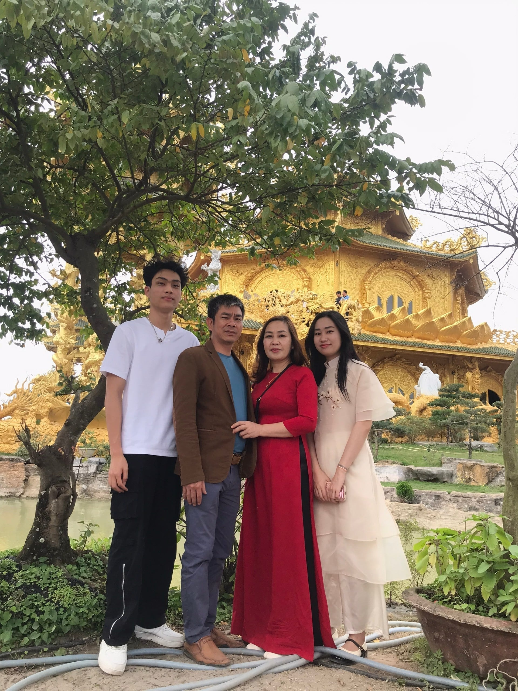

Mô tả Gia Đình
Gia đình của em bao gồm bố, mẹ, và em và em trai. Bố em đi lái xe Bắc Nam còn mẹ em là giáo viên cấp hai. Em trai đang học lớp 12 và có niềm đam mê với mỹ thuật.
Gia đình em thường dành thời gian cuối tuần để đi chơi vui vẻ hoặc tổ chức các hoạt động gia đình. Chúng em cũng có thói quen ăn tối cùng nhau mỗi ngày để chia sẻ về công việc và những điều xảy ra trong ngày.
Trong gia đình em luôn coi trọng tình cảm, sự hiểu biết và hỗ trợ lẫn nhau. Đây là nơi em học được nhiều điều về sự quan trọng của sự đoàn kết và sự chăm sóc lẫn nhau. Gia đình em tạo môi trường ấm cúng và hạnh phúc để mỗi thành viên phát triển và học hỏi.
Mô tả Vật Nuôi
Mèo, loài động vật độc lập và tinh nghịch, với bộ lông mềm mịn và đôi mắt lấp lánh, luôn tạo nên sự huyền bí và quyến rũ. Tính cách nhanh nhẹn, bản năng săn mồi, và khả năng tự chăm sóc bản thân khiến chúng trở nên bí ẩn và lôi cuốn. Tuy nhiên, dưới vẻ ngoài lạnh lùng, mèo cũng thể hiện tình cảm và sự đồng cảm đặc biệt đối với chủ nhân, tạo nên một sự kết nối đặc biệt và gần gũi. Mèo không chỉ là thú cưng, mà còn là nguồn cảm hứng và niềm vui cho những người yêu thú cưng trên khắp thế giới.